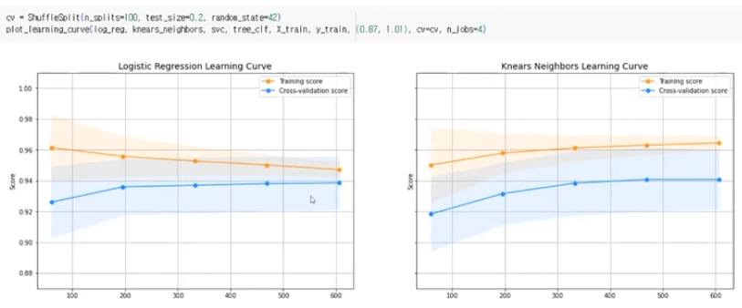

Kaggle CreditCard Fraud Detection (과제 피드백 및 관련 이론, 개선계획)
내 제출과제에 대한 피드백
- Train, Validation, Test 데이터의 비율은 8:1:1 정도가 보통
- Flatten은 사진 등 이미지에 많이 사용, 필요 없을 수 있다
- model.compile의 metric
- f1-score는 여러 종류가 있음
- imbalance한 상황에서 이상거래 등에 가중치를 주는 weighted f1-score
- class별로 하는 macro f1-score
- micro f1-score
- 이런 상황에서 지원되는 metric이 vanila f1-score라면 점수가 안좋게 나온 것일수도 있다
- weighted f1-score와 같은 것을 사용하는 편이 적절히 평가될 수 있음
- recall, precision을 모두 넣고 볼 수도 있음
- model build 대비 점수가 낮게 나와서, metric 문제일 가능성이 높아보임
- f1-score는 여러 종류가 있음
- Hyper parameter Optimizer (발표과제에서는 Keras Tuner 사용)
- 개념
- 예를 들어 10개 파라미터에 100개 선택지가 있다면 \(100^{10}\)과 같이 계산량이 많음
- (Brute force방식) 모든 조합을 계산하여 최적조합을 찾는 방식은 계산량 문제로 어려움
- 전체 계산 중 일부만 계산하는 방식으로, 전문가만큼의 성능은 안나오지만 초보의 수준에서는 좋음
- 예를 들어 10개 파라미터에 100개 선택지가 있다면 \(100^{10}\)과 같이 계산량이 많음
- Random search, Grid search
- Grid search : 나머지 파라미터를 고정시킨 채 최적 파라미터를 도출하는 것을 반복하여, 최적 파라미터만 조합
- 최적이 아닌 파라미터들의 조합으로 최적 성능이 나올 수 있다는 단점
- Random Search : 파라미터들의 ’조합’이라는 부분을 Grid search보다 좀 더 보기위한 방법
- Grid search : 나머지 파라미터를 고정시킨 채 최적 파라미터를 도출하는 것을 반복하여, 최적 파라미터만 조합
- 추가용도
- 모델을 확정한 후, 모델의 성능을 좀 더 높이기 위해서도 사용 가능
- 예를 들면 모델을 분석하고 보고서를 쓰는 코딩테스트도 있는데, 이럴 때 조금이라도 성능을 올리기 위해 사용가능
- 모델을 확정한 후, 모델의 성능을 좀 더 높이기 위해서도 사용 가능
- Hyper parameter관련 보고서를 쓴다면, 어떤 기법을 추가하여 유용하고 좋았는지 비교하는 것이 좋음
- 개념
- Early stopping 설정
- epoch수 대비 3%정도로 설정하기도 함
- 실질적으로는 전체 epoch을 돌리고, 가장 성능이 좋았던 포인트를 사용하는 방법을 사용(모든 포인트의 고려)
- 참고
- 이후 새로운 거래가 생겨 모델로 판별하려면, 학습데이터와 같이 PCA처리 후 input 해야함
- 매번 현재의 과제처럼 튜닝을 새로하기보다는, 전 모델의 튜닝을 지속하는 것이 효율적임
- Layer수, Activation function 등은 변경 불가한 요소
- Learning rate scheduler, early stopping 등의 변경 가능
과제 보완 계획
Data set 분석
- t-sne를 통해 데이터의 분포 등을 시각화하여 파악해봄
- 내가 어느정도의 분류는 가능하겠다는 정도를 파악할 수 있음
Data set 구성
- Train/Validation/Test를 8:1:1로 구성
- train_test_split(stratify=실제Label)을 통한 Label 비중 맞추기 검토
- Validation set은 StratifiedKFold 적용 검토
- 컬럼별 이상치 처리 : Box plot의 Upperbound나 Underbound값으로 대체 고려(제거X)
- Robust scaler 고려
Parameter 등 모델구성
- optuna적용고려, Randomsearch, GridSearch 확인 후 선택
- metric을 weighted f1-score나 recall&precision 등을 고려
- 예시 : metrics = [f1_score, Precision(), Recall()]
import tensorflow_addons as tfa f1_score = tfa.metrics.F1Score(num_classes=1, threshold=0.5) model.compile(loss=SigmoidFocalCorssEntropy(), optimizer=tf.keras.optimizers.Adam(learning_rate=0.0001), metrics=[f1_score, Pricision(), Recall()]) - Early stopping은 코드구현은 하되 실질적으로는 무효가되는 patience인 경우도 추가로 설정
- 전체 epoch을 돌려 가장 성능이 좋은 포인트도 확인한 후 대조
- Learning rate scheduling은 기존의 별도 함수를 만드는 방식 외, ReduceLROnPlateau 함수 이용도 고려
from tf.keras.callbacks import ReduceLROnPlateau
reduce_lr = ReduceLROnPlateau(monitor='val_loss',
factor=0.2, # lr감소치. 현재 lr이 0.01이라면 0.01*0.2를 적용
patience=10, # 개선에 대한 허용치. 10 epoch까지 개선이 없다면 적용
mode='min', # auto, max, min 옵션 있음
min_lr=0.001)
model.fit(x_train, y_train, callbacks=[reduce_lr])Batch size는 가능한 선에서는 늘려서 빠른 학습을 도모
평가시 ROC Curve나 PR Curve 시각화도 고려
Cross validation 활용시, 여러번의 모델Score가 나오므로 Box plot을 통해 안정적인 모델인지 시각화
기타
- 시각화를 통해 데이터 설명 보강
- ROC Curve나 PR Curve 등의 사용
추가진행
- 머신러닝 기법 활용
- 모델 : XGB, Random forest 고려
- 데이터셋 : 샘플링(오버 또는 언더) 적용 검토
- 오버샘플링 한다면 SMOTE대신 ADASYN적용검토
- 샘플링 적용/미적용 성능 비교
- 위의 모델 또는 Logistic regression으로 비교
- 모델학습 : Cross validation을 통한 과적합 방지
- Threshold adjustment 고려
7주차 발표과제들 보완에 필요한 추가지식
불균형한 데이터를 맞춰주는 샘플링 기법 : 오버샘플링, 언더샘플링
- 주의점 : 두 기법 모두 Test data를 먼저 분리해둔 후 나머지에 대해 적용. Test data는 건드리지 않는다
- 언더샘플링과 오버샘플링은 둘 중 하나만 사용하는게 나음(함께 사용시 둘의 단점을 모두 가질수도 있다)
- 참고사항
- 가급적이면 언더샘플링보다는 오버샘플링을 많이 씀 (데이터는 자산이라는 관점에서, 손실 방지)
- 추세는 발전된 알고리즘의 모델에 맡기고, 샘플링을 적용하지 않는 방향
- 다만 상황에 따라서는 오버샘플링이 훨씬 좋을 때가 있음
- 로지스틱회귀는 최신의 복잡한 알고리즘이 아닌 단순한 모델로, 편중된 데이터에 취약한데 여기에는 궁합이 좋음
- XGBoost나 Neural Network같은 복잡한 모델에는 오히려 안좋을 수 있음
- 다만 상황에 따라서는 오버샘플링이 훨씬 좋을 때가 있음
- 오버샘플링 & 언더샘플링
- 오버샘플링 : 부족한 데이터를 늘림
- 장점 : 데이터의 손실이 없음
- 단점 : 데이터를 늘리기 위해 같은 데이터를 반복하면서 노이즈 발생 : Precision이 낮아진다(Recall은 높아진다)
- SMOTE가 이를 보완하기 위한 오버샘플링 기법이지만 근본적으로는 데이터가 반복되는 것은 같음
- (별도확인) ADASYN으로 SMOTE의 단점을 보완가능(SMOTE와 달리 다른 클래스의 데이터 수도 고려하여 증강)
from imblearn.over_sampling import SMOTE, ADASYN
- 언더샘플링 : 많은 쪽의 데이터를 부족한 데이터만큼 남기고 버림
- 단점 : 데이터를 버린다는 손실
- function이 아니라 직접 구현한다면, 순서대로 가져오지 않고 Random하게 가져오도록 구현
- 샘플링을 통해, 이상거래에 더 잘 반응할 수 있는 모델로 만들어 줄 수 있음
- 다만 고객 입장에서는 정상거래인데 이상거래로 판단되게 되는 불편함이 생길 수 있음
- 오버샘플링 : 부족한 데이터를 늘림
StratifiedKFold: 특정 Label이 많거나 적어서분포가 Imbalance한 경우 활용- Validation set을 나누는 기법이므로, Test set 분리 후 적용
fold: 같은 Data set에서, 각 부분을 모두 Validation으로 활용할 수 있도록 반복데이터가 적을 때, 있는 데이터를 최대한 활용해, Validation set을 다양하게 만들 수 있다- 예를 들어 100개 데이터에 5 fold를 적용한다면, 아래와 같이 구성됨(굵은 부분이 validation set)
- 120, 21~100 / 1~20, 2140, 41~100 / 1~40, 4160, 61~100 / 1~60, 6180, 81~100 / 1~80, 81~100
- 참고 코드
skfold = StratifiedKFold(n_split=5, random_state=None, Shuffle=False) for train_index, test_index in skfold.split(X,Y): X_train, X_test = X.iloc[train_index], X.iloc[test_index] Y_train, Y_test = Y.iloc[train_index], Y.iloc[test_index]이상치 데이터에 대한 처리 : 제거 vs 대체
- 제거는 데이터의 손실이므로 대체가 더 좋을 때도 있음
- Box plot 기준으로 Upper bound이상의 값들은 Upper bound값으로 치환하는 것도 방법
- 제거는 데이터의 손실이므로 대체가 더 좋을 때도 있음
차원축소(t-sne, PCA , SVD등)- 차원축소 : Feature들을
상관관계가 없는 Feature로 바꾸는 것을, 수학적인 방법으로 적용- 예를 들어 100개의 feature 중 연봉과 월급은 중복(상관관계있음)이므로 차원축소 적용 후 10개의 feature로 mapping
- 대표적으로 PCA가 있음, 현재의 데이터는 이미 PCA가 적용되어 있음
- 종류
PCA: 상관관계를 없애며 전처리 가능SVD(간단하게 PCA를 확장한 것으로 볼 수 있음. 전처리 가능)t-sne: 저차원으로 mapping 하여 시각화 용이 (전처리는 불가)
- 유의사항 :
PCA나 SVD는 선형적인 관계가 있을때만 적용한다(비선형적인 정보는 손실되므로모델성능하락이 있을 수 있다)
- 차원축소 : Feature들을
Plot을 그렸을 때 fold의 수만큼 점으로 나오게 됨(5fold면 5개)
Recall, Precision은 Trade-off, 2개 모두 준수한 Sweet spot을 찾기 위해 함께 볼 수 있는 방법
- f1-score : 조화평균을 활용한 하나의 숫자로 판단 가능
- ROC Curve : TP와 FP를 x, y축으로 두고 면적으로 판단 가능(넓을수록 좋음, 0~1값 가짐)
- PR(Precision-Recall) Curve : Precision과 Recall을 x, y축으로 두고 면적으로 판단 (넓을수록 좋음)
Binary 문제의 경우, Simoid 대신 2개 뉴런의 Softmax도 가능함
Batch size는 관례(2의 배수)를 맞추는 것이 좋음 (보고서 확인의 관점에서는 안좋은 시선으로 보게될 수 있다)
이상치 Robustscaler
train_test_split(stratify=실제Label)옵션으로 Label의 비율을 비슷하게 샘플링 가능
오버샘플링의 단점 : precision이 낮아진다
- precision은 판정한 건 중 실제의 비율이고, 오버샘플링으로 정상거래를 이상거래로 판정하는건이 많아짐
- recall의 측면에서는 오버샘플링을 통해 판정을 늘리는게 나을 수 있음(암환자 사례)
데이터 불균형에서의 가중치 설정 : Class(label)분포 기반 가중치 설정
더 중요하게 보는 것에 패널티를 더 크게 줌
정상거래(0) 284315건, 이상거래(1) 492건인 경우의 예시
total_samples = 284315 + 492 weight_for_0 = total_samples / ( 2 * 284315) weight_for_1 = total_samples / (2 * 492) class_weights = {0:weight_for_0, 1:weight_for_1} model.fit(x_train, y_train, class_weight=class_weights)Neural network에서 해결할 수 있는 부분이어서 오히려 혼동을 줄 수도 있다
- 모델 알고리즘이 복잡한 경우는, Weight에서 패널티를 다르게 주는 focal loss나 오버샘플링을 잘 쓰지 않음
- Neural network에 Sigmoid focal CrossEntrophy를 통해 패널티를 높게 주어 긍정적 효과를 기대했지만, 오히려 성능하락될 수 있음
- 모델 알고리즘이 단순한 Logistic regression 등은, 이러한 Weighted loss가 효과가 좋을 수 있음
- 모델 알고리즘이 복잡한 경우는, Weight에서 패널티를 다르게 주는 focal loss나 오버샘플링을 잘 쓰지 않음
Learning rate scheduler 함수로 구현 예시
from tf.keras.callbacks import ReduceLROnPlateau
reduce_lr = ReduceLROnPlateau(monitor='val_loss',
factor=0.2, # lr감소치. 현재 lr이 0.01이라면 0.01*0.2를 적용
patience=10, # 개선에 대한 허용치. 10 epoch까지 개선이 없다면 적용
mode='min', # auto, max, min 옵션 있음
min_lr=0.001)
model.fit(x_train, y_train, callbacks=[reduce_lr])Dropout은 간단한 모델이라면 높게 설정할지 않아도 괜찮음
Batch size는 데이터가 적거나 장비(메모리) 상황이 좋다면 늘려서 빠르게 학습
과적합(Overfitting)의 원인
- 모델 자체의 문제, 앞단계인 데이터 전처리나 샘플링, Data split 등의 문제일 수 있음
- 단순히 성능이 안나왔다해서 과적합으로 판단은 금물
LDA (Linear discriminant Anaylsis) : 분류문제에서는 Logistic Regression 좋은 성능
KNN (K-Nearest Neighbor) : 근접(이웃)한 데이터들을 분류
Cart : 의사결정나무(Decision Tree)의 기본 모델
Random forest : 여러개의 트리 모델을 만들고, 다수결로 정함. 앙상블 모델
Boosting 계열 모델 : 학습 후, 틀린 부분에 가중치를 두면서 학습 반복
- 처음에는 이상거래에 대해 많이 틀리다가, 점점 잘 잡아내도록 학습됨.
- XGB를 많이 사용
이외에 Catboost 등도 있음
현재와 같은 20만건 정도의 데이터는, 최신계열의 복잡한 머신러닝에서 더 성능이 좋을 수 있음
Cross validation 활용시, 여러번의 모델Score가 나오므로 Box plot을 통해 안정적인 모델인지 확인 가능
모델의 선택 (SOTA가 기준이 되어야 하는지에 대한 질문)
- 문제 정의(상황이 어떤 문제인지 정의할 능력 필요)
- 어떤 계열의 모델이 적합한지 선택 (전반적인 머신러닝 등 모델 지식 필요)
- SOTA(State of the art)는 이후의 문제
논문 등을 볼 때는 문제 Setup까지 본 후, 바로 풀이보지말고 먼저 고민 후 보기
Random forest모델 사용시 두가지 고려사항
- Cross validation을 통한 과적합 방지
- 앙상블모델은 복잡한 머신러닝 기법에 속하고, XGB나 Random forest는 과적합 일어날 수 있음
- Hyper parameter tuning을 통한 개선
- Cross validation을 통한 과적합 방지
Thresholding(임계값 조정)
- Precision과 recall은 trade-off. 원하는 것은 둘 다 높은 Spot
- 이러한 Sweet spot을 시각적으로는 ROC/PR Curve로 확인, 코드로는 Threshold adjustment 조절
- Threshold 예시 일부
y_scores = model.predict_proba(X_test)[:, 1] precision, recall, thresholds = precision_recall_curve(y_test, y_scores) f1_score = 2 * precision * recall / (precision + recall) optimal_idx = np.argmax(f1_scores) optimal_threshold = thresholds[optimal_idx]
- Precision과 recall은 trade-off. 원하는 것은 둘 다 높은 Spot
Copyright © 2024 Kibok Park All rights reserved.